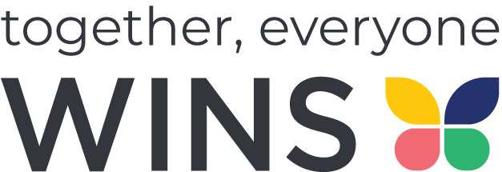

Our Story
At Night Sparrow Productions, we believe in the power of storytelling to inspire, connect, and make a difference. Based in Calgary, Alberta, our journey began with a deep passion for audio production and creative media.
At Night Sparrow Productions, we believe in the power of storytelling to inspire, connect, and make a difference. Based in Calgary, Alberta, our journey began with a deep passion for audio production and creative media.
We aim to help nonprofits, small businesses, and individuals bring their ideas to life with high-quality video, photography, and audio production services. Every project we undertake reflects our commitment to creating content that resonates with audiences and leaves a lasting impression.
We are proud to have partnered with organizations like WINS (Women in Need Society) to produce impactful videos that raise awareness and foster positive change. Together, we tell stories that matter.
If you’d like to get in touch, click the button below to email us:
Send Email